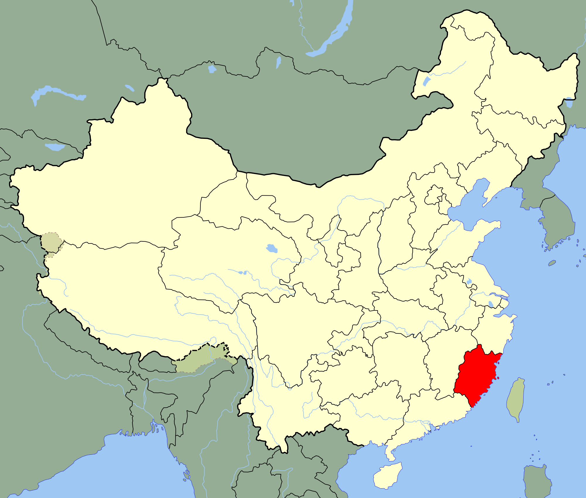
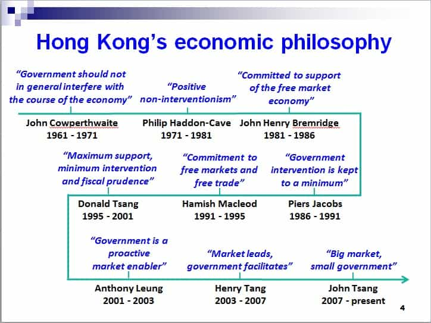

Recently I read one of the most influential economists in the world, William Easterly’s book The Tyranny Of Experts (2014) and will share some important lessons from it. While much is well-established common sense at this date, such as that benevolent autocrats rarely exist and historical conditions matter for economic development, there are still less obvious points to absorb and learn about.
The book essentially argues that the Austrian-British economist Friedrich Hayek’s classic liberalism is preferred over the Swedish technocratic economist Gunnar Myrdal’s ideas. They both shared the Noble prize in economics in 1974, but the debate between them never took place in public, and perhaps if it had, some of the misguided remedies for poor countries could have been avoided. Easterly is unhesitatingly on Hayek’s side on the political-economic spectrum, although with a nuanced understanding of this complicated issue. Both markets and governments matter.

1. Individual economic and political rights are more important than national policies
There are not just cultural and social but also economic benefits from nationalism. For instance, as the likewise distinguished economist Dani Rodrik (which Easterly refers to in other regards) has emphasized, domestic markets are for a variety of reasons generally more well-functioning than international markets.
However, national policies as such have only a limited effect. Essentially, the wisest thing a government can do is to provide for public infrastructure and secure individual economic and political rights for its citizens. From there on the people, especially the more talented and industrious such, will create spontaneous solutions to local problems (a lesson from Adam Smith which commonly has been misunderstood as that the Scotsman cherished greed), and create wealth and prosperity for themselves and others.
An excellent example are the people from the Fujian province in eastern China, which have dominated the trade and investment in East Asia and affected the development in mainland China 1978 onwards.

Also from older history there are clear examples of this:
Spain and Portugal had Atlantic trade access but they had absolutist institutions and values. Northern Italian cities had relatively free institutions and values but they did not have Atlantic access nor free values. The winners were the United Kingdom and the Netherlands, which had Atlantic access and already had relatively free institutions and values by sometime in the 1600s.
2. Also poor people yearn for freedom
There has been a tendency among technocratic economists and development “experts” to assert that poorer people do not care about freedom. Although it might be true in some instances, surveys and interviews indicate that this is indeed not the case. Easterly summarizes:
The general picture is that poor people (like rich people) do not like being told to shut up; they like to speak up to protest any goverment abuses of them.
It seems that the near-universal model of individual rights (within the nation’s border) and market-based economy is the most appropriate model for real development.

3. Economic growth has large measurement errors
GDP is an adequate rough estimate for national wealth but the measure of it tends to be very flawed, to say the least. For instance, the World Bank’s World Development Indicators (WDI) tend to present vastly different data than the Penn World Tables (PWT), not just on sub-Saharan African countries – which often fail to collect and present adequate data – but also on high-performing states such as Singapore. The discrepancies can sometimes be vast.
The reason why this is relevant beyond accuracy is because it makes it very misguided to either celebrate or accuse a government of incompetence if the data is not correct and unambiguous.

4. Growth over time is more crucial than temporary miracles
The truth is that economists rarely can predict growth. When they look at past experiences they can pinpoint that which in fact does work and that which does not, but the future is yet to be unfolded and is unpredictable in many significant ways. Easterly stresses:
The root cause of these findings is simply that annual growth rates are extraordinarily volatile. The average change in GDP per capita growth rates (in either direction) from one year to the next is over 4 percentage points, usually reflecting the appearance and disapperance of temporary factors like a commodity-price boom.
That is why one often has to wait and see and not be excited about sudden growth miracles, which rarely last more than a couple of years (or less). There are exceptions, such as Hong Kong, South Korea, Singapore and Taiwan, which managed to have growth that lasted for several decades, but the growth rates have eventually slowed down in these countries. Easterly predicts the same regarding China.

Conclusion
Easterly’s book provides relevant data and perspectives on economic development, both success stories and failures due to misguided beliefs that the inadequate knowledge and agency of governments will cure the ills of the world.
It is intriguing to read about historical instances from places as different and distant – in both time and space – as Genoa, New York City, Colombia, Benin, Syria, South Korea and China. It does not address every relevant topic, such as human capital, cultural differences and the effects from women competing with men in the job market, but a single work rarely covers every important aspect. Many academics do also have a tendency to avoid contentious issues, or take for granted that industrious Jews, women and Chinese should be praised within the modern West.
Some of these ideas indeed question the benefits of nationalism, but as far as I see it has never been autocratic nationalism that masculine men cherish but rather a more libertarian such. Economically, the government should let its habitants have the opportunity to prosper and then stay away as much as possible. Internationally, a delicate balance between nationalism and restricted globalism appears to be the best prescription.
Read More: 5 Important Insights From Red Pilled British Economist Peter Bauer